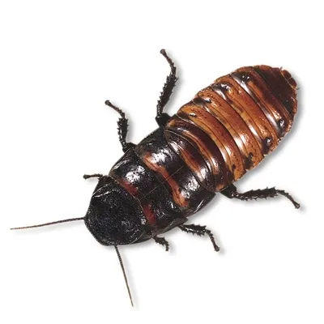
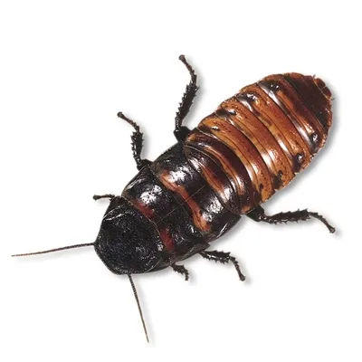
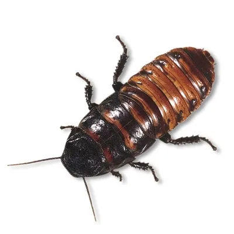

This is a Process Journal for the project.
Aspects of the project are discussed within the Critique checkpoint documents, which are embedded.
Further discussions, alterations and developments are discussed inline.
Tasks for Week 1 and 2:
I considered this book to be interesting because the metanarratives of alienation and anxiety that Franz Kafka portrays in the novel are relevent to this day.
The short and concise nature of the work and the fact that it is centred almost entirely in one apartment has some interesting possibilities.
Tasks for Week 3 and 4:
After sketching out a basic wireframe, I then drew it more concisely.
I then created a project in Adobe XD that enabled me to prototype
the links in a digital space and get a feel for the coverpage look.
I sourced a couple of different images for the coverpage, my current
conceptual approach is to interpret the novel and its themes in a
contemporary way.
One image is a server room, and I thought that perhaps the metamorphosis
could be framed as though someone was lost in the virtual world.
The second image is an interpretation of a popular series, where
workers are surgically altered so they have a partition between home
and work.
This concept serves as an interesting metaphor for lost identity.
Tasks for Week 5 and 6:
I made the decision to use Google Fonts and embed them. For the
formatting and layout I worked backwards from Adobe XD and began
to style the pages with CSS. It is obvious that fixed point size fonts
will not be good for responsive, changing to Em sized fonts will be required.
My first page was called "Homepage" so I have renamed it "index" (as per industry standard)
and reformatted the links as appropriate.
My index page at the time corresponded to the contents section.
so I re-named this page "Contents".
I intend to use a floating sidebar menu so that I can keep navigation to a minimum, and provide a better reading
experience.
I added colours and images to the project, the colours were taken from the index page "hero" image.
I also spent timne formatting the text with Em sizes and the borders and margins as percentages.
To do this I utilized Classes and ID selectors to target specific elements.
In the "About" page I used media rules to resize the iFrame sections
for different devices. I would like to develop these to incorporate all of the pages if there is time.
For the background of the main text portion I took a photograph of a building, imported it into
photoshop and matched the size with an entire page screenshot of the text as is. I then cropped it and
added some colour accents to blend with my chosen colour scheme.
This image and strategy would require some rework later because the load time for the background was
slow.
Creating a new page for the Process Journal required page duplication, relinking and some formatting. I searched for some more Kafka content and found a full Youtube video of the story with and artist drawing it. This was embedded as an iFrame.
I did some research and wrote a small synopsis of the novel (without spoilers) and created a biopic about Kafka.
The formatting of the "next" page link was changed to a lighter colour so contrast was improved.
I refined a bit of the CSS and removed some redundant and repeated code, particularly around the hover and
clicked states.
"The End" of the story was linked to the "About" Page.
I was tempted to link it back to "Page 1" to create a Kafkaesque confusion, but elected not to.
When adding the sidebar I used code from W3Schools and changed
the formatting to suit.
By moving the connected elements on the z-axis to the correct order I managed to troubleshoot the X (close) button and
ensure it could be clicked on.
I transposed the menu to all of the pages, except index, and added a class for the locator so that the current page was highlighted.
Tasks for Week 7 and 8:
I had worked out some responsive design aspects for the "About" page and class over the mid-term break.
These were not really working properly anymore because "About" and Process Journal were still the same class. The content
was a little different on both pages. By making edits in the responsive menu of Firefox I was able to change the sizes of text
and the margins to work at the Max 768px breakpoint, this is invaluable for troubleshooting layout issues quickly.
The Menu will require some manipulation to be functional at the mobile size.
The best thing to do would be to add a solid background to the closed state and fix the Hamburger icon to the top of the
page so that it is visible, but does not have text sliding past the opaque layers.
It may be a good idea to reduce the opacity of all the other page content when the menu is open.
The critique of my interactive proposal was that it was not alligned with the brief.
I needed to re-think it and come up with something better.
Create a "build your own bug" feature as an interactive element.
The user can pick parts of a bug or a human to add together and decide the number of limbs, head parts or torso.
(This was suitably interesting and worth developing).
The process is further outlined in Critique 05.
I started out with a Wiki Commons image of Franz Kafka, which I used for the head.
My Bug was from a site that sells monster sized cockroaches as pets.
A catalogue selling 1920's style suits was the source for the remainder of the images.

This section contains Design and Iteration related to the primary animated section Animate
Embedded Journal with devlopment and process steps for improvements to the static site.
Design and iteration process for the Animation section: Critique 05
W3 Schools material was the primary resource for troubleshooting and figuring out syntax related issues.
I spent some time after completing the rest of the Journal and worked on responsive resizing using media rules.
I consider this aspect of the project "work in progress".
Of note: the H1 in the animation section is not as elegant as I would like it to be.
On this page are 2 main fixed elements and flowing text, so reconciling this with media rules is just messy.
The most practical way to resolve this would be to utilise a flexbox at a few key breakpoints:
(1300px, 1150px, 850px, 768px), or similar.
This way the structure would be sensible and predictable.
I will not be doing this at this stage because I have no further time to dedicate to this project.
I would potentially need to debug various elements of the animation while I came to grips with how flexbox was working, and submitting a working animation is more important to me.